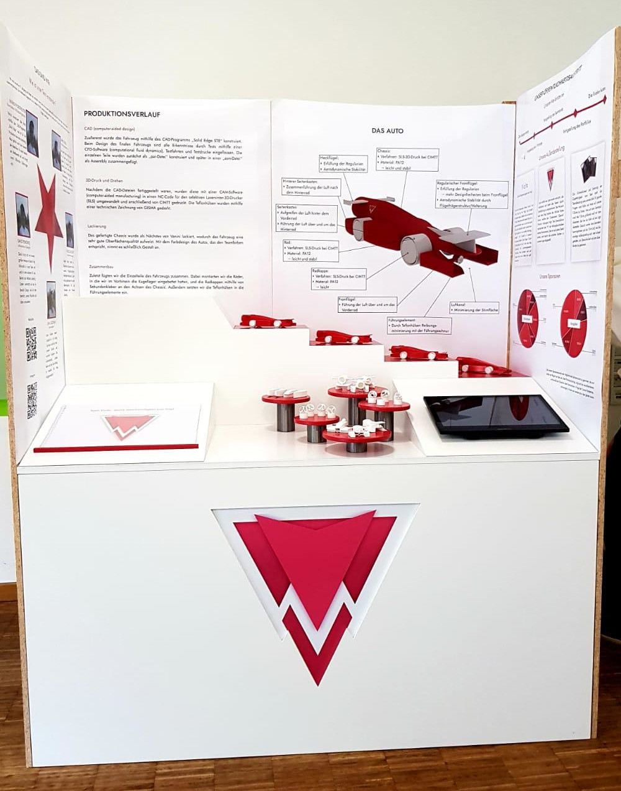
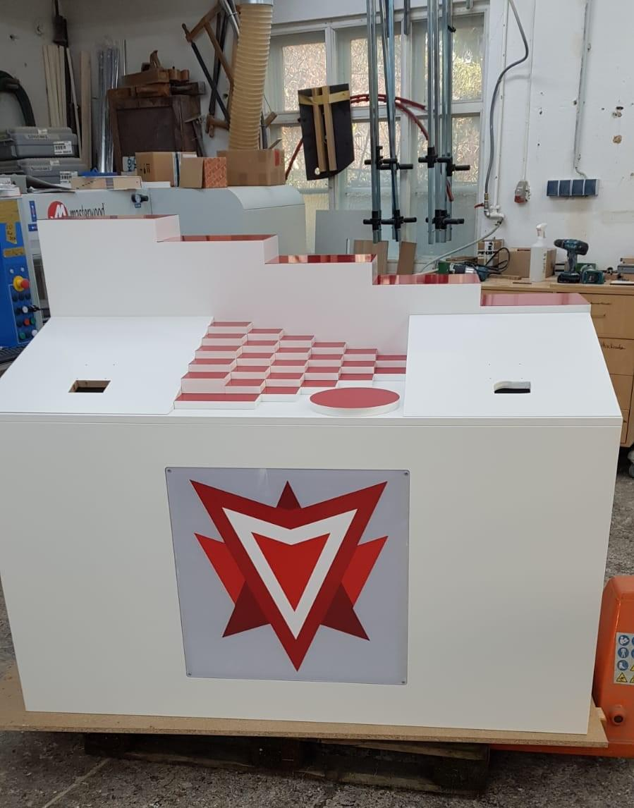
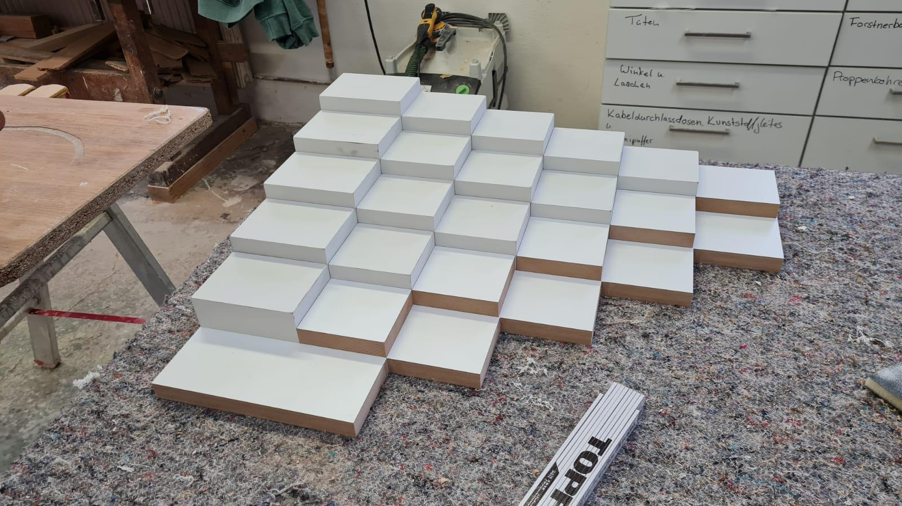
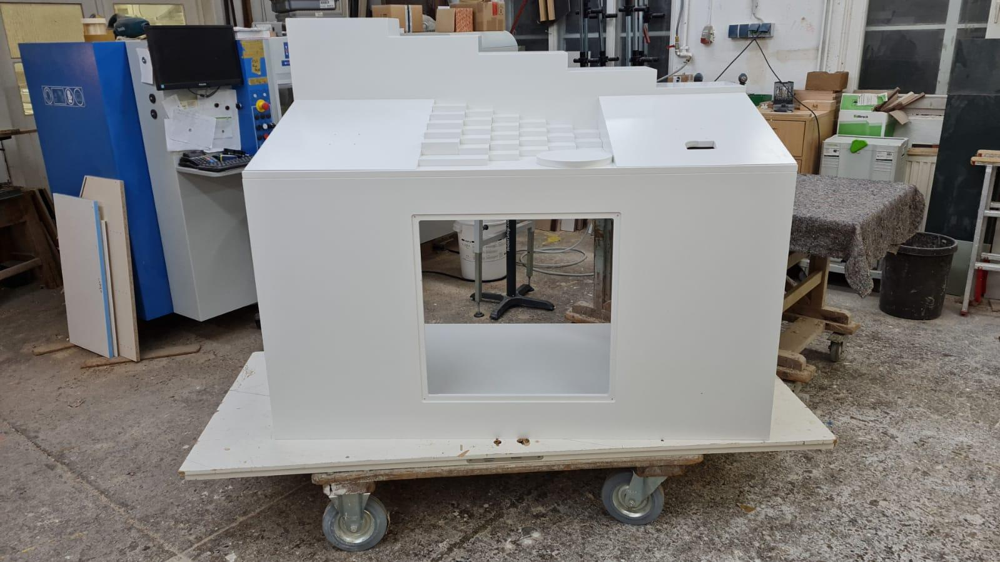

Sehr geehrte Sponsoren!
Wir melden uns mal wieder mit einem neuen Newsletter. Dieses Mal soll es um einen wichtigen Bestandteil des Projektes neben dem eigentlichen Rennwagen gehen: den Teamstand. Bereits in der letzten Saison konnten wir die Bewertung für den besten Teamstand ergattern und diese Leistung wollen wir in der nächsten Runde noch einmal toppen. Zunächst einmal sehen Sie hier den Teamstand von der letzten Saison im Vergleich zu unserem jetzigen Teamstand:
 Wie Sie sehen, sind sich die beiden Teamstände relativ ähnlich. Auf den hinteren Stufen sind die vier Prototypen bis hin zum finalen Auto angeordnet. Damit lässt sich die Entwicklung sehr gut nachvollziehen. Auch die beiden Schrägen an den Seiten bleiben bei der neuen Version erhalten, allerdings mit neuen Funktionen. Denn während das Portfolio im letzten Jahr noch in einer gedruckten Form vorlag, ist es nun über einen Bildschirm digital aufrufbar. Für den zweiten Bildschirm auf der rechten Seite verwenden wir eine NFC-Technik. Denn auf den vielen, kleineren Stufen in der Mitte werden sich die verschiedenen Versionen der Einzelteile der Fahrzeuge befinden, die wir im Verlauf der Vorbereitungen getestet haben. Stellt man dann ein Teil auf den roten Kreis, werden die Informationen zu dem Einzelteil dank der NFC-Technik auf dem Bildschirm angezeigt. Auf den Plakaten, die Sie bei unserem letzten Teamstand sehen können und die wir für den neuen Teamstand auf die aktuelle Saison angepasst haben, befinden sich Informationen zum Team, zum Produktionsverlauf, zum finalen Auto sowie zu unserem Marketing und Management. Eine Neuerung, die jetzt hinzukommt, sind verschiedene QR-Codes, die zu einer Website führen, auf der die einzelnen Teammitglieder sich und ihren Bereich ausführlich vorstellen. Das Logo in der Frontseite wird wie in der vorherigen Saison wieder von innen mit einem LED-Panel beleuchtet.
Wie Sie sehen, gibt es trotz der Ähnlichkeit einige Neuerungen, die uns hoffentlich bei der Bewertung noch einige mehr Punkte einbringen werden. Wir sind auf jeden Fall mehr als zufrieden mit dem Endergebnis! Sie werden das nächste Mal kurz vor dem Wettbewerb im März von uns hören, bis dahin wünschen wir Ihnen alles Gute und bleiben Sie gesund!

Mit freundlichen Grüßen
Das Team Vicito